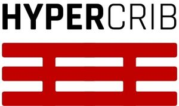

Trade Mark Journal No.2025/009 28 February 2025
WO0000001839514 (17,19)
Office of origin: Italy
Date of International Registration:21 October 2024
Date of designation in the UK:
21 October 2024

The mark contains the colours Black and red.
International priority date claimed: 15 October 2024
(Italy)
(302024000152751)
- Class 17
- Plastic materials in the form of panels [semi-finished products]; mouldable synthetic resins [semi-finished]; polyethylene resin [semi-finished]; polymer resin fibres [other than for use in textiles]; semi-worked polymer resins in the form of plates; semi-worked polymer resins in the form of bands; synthetic rubber in the form of blocks; extruded plastics in the form of sheets for use in manufacture; resins in extruded form; semi-processed plastics, resins, polymers or synthetic fibres other than for textile use; semi-worked plastic substances; extruded plastics [semi-finished products]; extruded plastic in the form of bars, blocks, pellets, rods, sheets and tubes for use in manufacturing; foils of plastics [semi-finished products]; plastics materials in the form of rods [semi-finished products]; plastics products in the form of profiles [semi-finished]; recycled compound plastics for use in manufacture; recycled plastics.
- Class 19
- Acoustic panels, not of metal; archways made from non-metallic materials; architraves of non-metallic materials; balustrades (non-metallic -); armour-plating, not of metal; bannisters (non-metallic -); beams, not of metal; building and construction materials and elements made of wood and artificial wood; building and construction materials and elements, not of metal; building boards of plastics materials; building boards (non-metallic -); building blocks (non-metallic -); building (framework for -), not of metal; cladding board (non-metallic -); construction elements of plastic; construction materials with soundproofing qualities, not of metal; expanded plastics for use in construction; expansion joints of non-metallic materials for use in construction; fabrics for use in civil engineering (geotextile); facade construction components of non-metallic materials; facades of non-metallic materials; facing panels of non-metallic materials; fascias (non-metallic -); fences, not of metal; fiber reinforced plastic construction materials; floorboards, not of metal; formwork (non-metallic -); geotextiles for use in landscaping; geotextiles; interlocking panels (non-metallic -) for building; laminated boards (non-metallic -) for walls; lintels, not of metal; materials, not of metal, for building and construction; modular silos, not of metal; mold resistant drywall; moldings, not of metal, for buildings; non-metal wall tiles; non-metallic building facade elements; non-metallic building materials for screeding; non-metallic building materials having acoustic properties; non-metallic moveable walls; non-metallic paving blocks; non-metallic wall panels; palisading, not of metal; plastic wallboards; plastic landscape edging; plastic floorboards; plastic boundary marking posts; parapets made from non metallic materials; prefabricated building components (non-metallic -); prefabricated building elements (non-metallic -) for on site assembly; profiles for building construction (non-metallic -); prefabricated non-metal walls; preformed building sections (non-metallic -); railway materials, non-metallic; reinforcement rods, not of metal; reinforcing fabrics (non-metallic -) for building; reinforcing materials, not of metal, for building; reinforcing mesh made of textile fibres for construction purposes; roadway of non metallic materials; road marking sheets and strips of synthetic material; sheet piles, not of metal; stabilisation fabrics [geotextiles] (non-metallic -) for use in construction; stabilisation fabrics (non-metallic -) for use in construction; stack linings (non-metallic -); structural elements (non-metallic -) for use in building; structural reinforcement (non-metallic -) for construction purposes; structural support joists (non-metallic -) for the construction of floors; synthetic paving composites; synthetic flooring materials or wall-claddings; wall boards, not of metal; wall linings, not of metal, for building; wall claddings, not of metal, for building.
HYPER FIBERS S.r.l.
Representative: Bugnion S.p.A., Via Sallustiana n. 15, I-00187 Roma (RM), ITALY